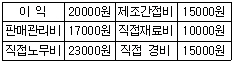
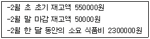

한식조리기능사 (2008-02-03 기출문제)
1과목: 식품위생 및 법규
1. 식품 등의 표기기준에 의한 성분명 및 함량의 표시대상 성분이 아닌 영양성분은? (단, 강조표시를 하고자 하는 영양성분은 제외)
- 트랜스지방
- 나트륨
- 콜레스테롤
- 불포화지방
(정답률: 65%)

2. 식품 등의 위생적 취급에 관한 기준으로 틀린 것은?
- 어류와 육류를 취급하는 칼·도마는 구분하지 않아도 된다.
- 유통기한이 경과된 식품 등을 판매하거나 판매의 목적으로 진열, 보관하여서는 아니 된다
- 식품원료 중 부패·변질되기 쉬운 것은 냉동·냉장시설에 보관·관리하여야 한다.
- 식품의 조리에 직접 사용되는 기구는 사용 후에 세척 및 살균하는 등 항상 청결하게 유지 관리하여야 한다.
(정답률: 93%)
3. 일반음식점의 영업신고는 누구에게 하는가?
- 동사무소장
- 시장, 군수·구청장
- 식품의의약품안전청장
- 보건소장
(정답률: 91%)
4. 식품등의 표시기준상 “유통기한”의 정의는?
- 해당식품의 품질이 유지될 수 있는 기한
- 해당식품의 섭취가 허용되는 기한
- 제품의 출고일 부터 대리점으로의 유통이 허용되는 기한
- 제품의 제조일로부터 소비자에게 판매가 허용되는 기한
(정답률: 80%)
5. 식품접객업소의 조리판매 등에 대한 기준 및 규격에 의한 조리용 칼/도마, 식기류의 미생물 규격은? (단, 사용 중의 것은 제외한다.)
- 살모넬라 음성, 대장균 양성
- 살모넬라 음성, 대장균 음성
- 황색포도상구균 양성, 대장균 음성
- 황색포도상구균 음성, 대장균 양성
(정답률: 84%)
6. 식품과 자연독의 연결이 틀린 것은?
- 독버섯- 무스카린(muscarine)
- 감자-솔라닌(solanine)
- 살구씨-파세오루나틴(phaseolunatin)
- 목화씨-고시폴(gossypol)
(정답률: 91%)
7. 다음 중 위해요소중점관리기준(HACCP)을 수행하는 단계에 있어서 가장 먼저 실시하는 것은?
- 중점관리점 규명
- 관리기준의 설정
- 기록유지방법의 설정
- 식품의 위해요소를 분석
(정답률: 76%)
8. 곰팡이 독으로서 간장에 장애를 일으키는 것은?
- 시트리닌(citrinin)
- 파툴린(patulin)
- 아플라톡신(aflatoxin)
- 솔라렌(psoralens)
(정답률: 86%)
9. 어패류의 신선도 판정시 초기부패의 기준이 되는 물질은?
- 삭시톡신(saxitoxin)
- 베네루핀(venerupin)
- 트리메틸아민(trimethylamine)
- 아플라톡신(aflatoxin)
(정답률: 81%)
10. 식중독에 관한 설명으로 틀린 것은?
- 자연독이나 유해물질이 함유된 음식물을 섭취함으로써 생긴다.
- 발열, 구역질, 구토, 설사, 복통 등의 증세가 나타난다.
- 세균, 곰팡이, 화학물질 등이 원인물질이다.
- 대표적인 식중독은 콜레라, 세균성이질, 장티푸스 등이 있다.
(정답률: 73%)
11. 식품제조 공정 중 거품이 많이 날 때 거품제거의 목적으로 사용되는 식품첨가물은?
- 용제
- 소포제
- 피막제
- 보존제
(정답률: 85%)
12. 황변미 중독은 14~15% 이상의 수분을 함유하는 저장미에서 발생하는 쉬운데 그 원인 미생물은?
- 곰팡이
- 세균
- 효모
- 바이러스
(정답률: 87%)
13. 장염비브리오 식중독 예방 방법으로 맞는 것은?
- 어류의 내장을 제거하지 않는다.
- 식품을 실온에서 보관한다.
- 어패류를 바닷물로만 씻는다.
- 먹기 전에 가열한다.
(정답률: 93%)
14. 경구전염병과 비교하여 세균성식중독이 가지는 일반적인 특성은?
- 소량의 균으로도 발병한다.
- 잠복기가 짧다.
- 2차 발병률이 매우 높다.
- 감염환(infection cycle)이 성립한다.
(정답률: 65%)
15. 단성중독의 경우 반상치, 골경화증, 체중감소, 빈혈 등을 나타내는 물질은?
- 붕산
- 불소
- 승홍
- 포르말린
(정답률: 60%)
2과목: 식품학
16. 전분에 대한 설명으로 틀린 것은?
- 찬물에 쉽게 녹지 않는다.
- 달지는 않으나 온화한 맛을 준다.
- 동물 체내에 저장되는 탄수화물로 열량을 공급한다.
- 가열하면 팽윤되어 점성을 갖는다.
(정답률: 66%)
17. 동. 식물체에 자외선을 쪼이면 활성화되는 비타민은?
- 비타민A
- 비타민D
- 비타민E
- 비타민K
(정답률: 85%)
18. 요오드값(iodine value)에 의한 식물성유의 분류로 맞는 것은?
- 건성유- 올리브유, 우유유지, 땅콩기름
- 반건성유- 참기름, 채종유, 면실유
- 불건성유- 아마인유, 해바라기유, 동유
- 경화유- 미강유, 야자유, 옥수수유
(정답률: 67%)
19. 과일의 갈변현상을 억제하기 위한 방법으로 적합한 것은?
- 철로 된 칼로 껍질은 벗긴다.
- 설탕물에 담근다.
- 껍질은 벗긴 후 바람이 잘 통하게 둔다.
- 금속제 쟁반에 껍질 벗긴 과일을 담는다.
(정답률: 91%)
20. 밀가루를 물로 반죽하여 면을 만들 때 반죽의 점성에 관계하는 주성분은?
- 글로불린(globulin)
- 글루텐(gluten)
- 아밀로펙틴(amylopectin)
- 덱스트린(dextrin)
(정답률: 86%)
21. 브로멜린(bromelin)이 함유되어 있어 고기를 연화시키는데 이용되는 과일은?
- 사과
- 파인애플
- 귤
- 복숭아
(정답률: 91%)
22. 육류 사후강직의 원인 물질은?
- 액토미오신(actomyosin)
- 젤라틴(gelatin)
- 엘라스틴(elastin)
- 콜라겐(collagen)
(정답률: 63%)
23. 참깨 중에 주로 함유되어 있는 항산화 물질은?
- 고시폴
- 세사몰
- 토코페롤
- 레시틴
(정답률: 69%)
24. 식품이 나타내는 수증기압이 0.75기압이고, 그 온도에서 순수한 물의 수증기압이 1.5기압일 때 식품의 수분활성도(Aw)는?
- 0.5
- 0.6
- 0.7
- 0.8
(정답률: 60%)
25. 다음 중 홍조류에 속하는 해조류는?
- 김
- 청각
- 미역
- 다시마
(정답률: 84%)
26. 마이야르(Maillard)반응에 영향을 주는 인자가 아닌 것은?
- 수분
- 온도
- 당의 종류
- 효소
(정답률: 51%)
27. 전분의 이화학적 처리 또는 효소 처리에 의해 생산되는 제품이 아닌 것은?
- 가용성 전분
- 고과당 옥수수시럽
- 덱스트란
- 사이클로덱스트린
(정답률: 46%)
28. 올리고당의 특징이 아닌 것은?
- 장내 균총의 개선효과
- 변비의 개선
- 저칼로리 당
- 충치 촉진
(정답률: 67%)
29. 사과를 깎아 방치했을 때 나타나는 갈변현상과 관계없는 것은?
- 산화효소
- 산소
- 페놀류
- 섬유소
(정답률: 68%)
30. 열무김치가 시어졌을 때 클로로필이 변색되는 이유는 김치가 익어감에 따라 어떤 성분이 증가하기 때문인가?
- 단백질
- 탄수화물
- 칼슘
- 유기산
(정답률: 89%)
3과목: 조리이론과 원가계산
31. 우엉의 조리에 관련된 내용으로 틀린 것은?
- 우엉을 삶을 때 청색을 띠는 것은 독성물질 때문이다.
- 껍질을 벗겨 공기 중에 노출하면 갈변된다.
- 갈변현상을 막기 위해서는 물이나 1%정도의 소금물에 담근다.
- 우엉의 떫은맛은 탄닌, 클로로겐산 등의 페놀성분이 함유되어 있기 때문이다.
(정답률: 73%)
32. 가열조리 시 얻을 수 있는 효과가 아닌 것은?
- 병원균 살균
- 소화흡수율 증가
- 효소의 활성화
- 풍미의 증가
(정답률: 68%)
33. 한국인의 균형된 식생활을 위해 제시된 식품구성탑에 대한 설명으로 틀린 것은?
- 우리가 섭취해야 하는 각 식품군의 분량과 중요성을 알 수 있도록 그림으로 표시한 것이다.
- 탑 모양으로 5개 층을 구성하며, 각 층은 각각 표시된 식품군을 나타낸다.
- 식품구성탑의 맨 위층은 식비 중 가장 많이 차지하는 식품군으로 고기, 생선, 달걀 및 콩류이다.
- 식품구성탑의 맨 아래층은 식생활 중 가장 많이 섭취되는 주식으로 곡류 및 전분류 식품이다.
(정답률: 76%)
34. 조리장 내에서 사용되는 기기의 주요 재질별 관리방법으로 부적합한 것은?
- 알루미늄제 냄비는 거친 솔을 사용하여 알칼리성 세제로 닦는다.
- 주철로 만든 국솥 등은 수세 후 습기를 건조시킨다.
- 스테인리스 스틸제의 작업대는 스펀지를 사용하여 중성세제로 닦는다.
- 철강제의 구이 기계류는 오물을 세제로 씻고 습기를 건조시킨다.
(정답률: 80%)
35. 기존 위생관리방법과 비교하여 HACCP의 특징에 대한 설명으로 옳은 것은?
- 주로 완제품 위주의 관리이다.
- 위생상의 문제 발생 후 조치하는 사후적 관리이다.
- 시험분석방법에 장시간이 소요된다.
- 가능성 있는 모든 위해요소를 예측하고 대응할 수 있다.
(정답률: 73%)
36. 기초대사량에 대한 설명으로 옳은 것은?
- 단위체표면적에 비례한다.
- 정상시보다 영양상태가 불량할 때 더 크다.
- 근육조직의 비율이 낮을수록 더 크다.
- 여자가 남자보다 대사량이 더 크다.
(정답률: 67%)
37. MSG(monosodium glutamate)의 설명으로 틀린 것은?
- 아미노산계 조미료이다.
- pH가 낮은 식품에는 정미력이 떨어진다.
- 흡습력이 강하므로 장기간 방치하면 안된다.
- 신맛과 쓴맛을 완화시키고 단맛에 감칠맛을 부여한다.
(정답률: 43%)
38. 채소를 냉동하기 전 블렌칭(blanching)하는 이유로 틀린 것은?
- 효소의 불활성화
- 미생물 번식의 억제
- 산화반응 억제
- 수분감소 방지
(정답률: 50%)
39. 계란의 열응고성에 대한 설명으로 틀린 것은?
- 높은 온도에서 계속 가열하면 질겨진다.
- 산이나 식염을 첨가하면 응고가 촉진된다.
- 노른자는 65℃정도에서 응고가 시작된다.
- 설탕은 응고온도를 낮추어준다.
(정답률: 64%)
40. 가식부율이 80%인 식품의 출고계수는?
- 1.25
- 2.5
- 4
- 5
(정답률: 60%)
41. 생선의 조리시 식초를 적당량 넣었을 때 장점이 아닌 것은?
- 생선의 가시를 연하게 해준다.
- 어취를 제거한다.
- 살을 연하게 하여 맛을 좋게 한다.
- 살균효과가 있다.
(정답률: 58%)
42. 어류의 사후강직에 대한 설명으로 틀린 것은?
- 붉은살 생선이 흰살 생선보다 강직이 빨리 시작된다.
- 자기소화가 일어나면 풍미가 저하된다.
- 담수어는 자체 내 효소의 작용으로 해수어보다 부패 속도가 빠르다.
- 보통 사후 12~14시간 동안 최고로 단단하게 된다.
(정답률: 53%)
43. 급식부분의 원가요소 중 인건비는 어디에 해당하는가?
- 제조간접비
- 직접재료비
- 직접원가
- 간접원가
(정답률: 52%)
44. 어떤 제품의 원가구성이 다음과 같을 때 제조원가는?

- 40000원
- 63000원
- 80000원
- 100000원
(정답률: 67%)
45. 트랜스지방은 식물성 기름에 어떤 원소를 첨가하는 과정에서 발생하는가?
- 수소
- 질소
- 산소
- 탄소
(정답률: 59%)
46. 아래와 같은 조건일 때 2월의 재고 회전율은 약 얼마인가?

- 4.66
- 5.66
- 6.66
- 7.66
(정답률: 26%)
47. 전분을 160~170℃의 건열로 가열하여 가루로 볶으면 물에 잘 용해되고 점성이 약해지는 성질을 가지게 되는데 이는 어떤 현상 때문인가?
- 가수분해
- 호정화
- 호화
- 노화
(정답률: 67%)
48. 호화와 노화에 대한 설명으로 옳은 것은?
- 쌀과 보리는 물이 없어도 호화가 잘 된다.
- 떡의 노화는 냉장고보다 냉동고에서 더 잘 일어난다.
- 호화된 전분을 80℃ 이상에서 급속히 건조하면 노화가 촉진된다.
- 설탕의 첨가는 노화를 지연시킨다.
(정답률: 60%)
49. 멥쌀과 찹쌀에 있어 노화속도 차이의 원인 성분은?
- 아밀라아제(amylase)
- 글리코겐(glycogen)
- 아밀로펙틴(amylopectin)
- 글루텐(gluten)
(정답률: 75%)
50. 일정 기간 내에 기업의 경영활동으로 발생한 경제가치의 소비액을 의미하는 것은?
- 손익
- 비용
- 감가상각비
- 이익
(정답률: 56%)
4과목: 공중보건
51. 다음 중 감수성지수(접촉감염지수)가 가장 낮은 것은?
- 폴리오
- 디프테리아
- 성홍열
- 홍역
(정답률: 52%)
52. 다수인이 밀집한 장소에서 발생하며 화학적 조성이나 물리적 조성의 큰 변화를 일으켜 불쾌감, 두통, 권태, 현기증, 구토 등의 생리적 이상을 일으키는 현상은?
- 빈혈
- 일산화탄소 중독
- 분압 현상
- 군집독
(정답률: 90%)
53. 역성비누를 보통비누와 함께 사용할 때 가장 올바른 방법은?
- 보통비누로 먼저 때를 씻어낸 후 역성비누를 사용
- 보통비누와 역성비누를 섞어서 거품을 내며 사용
- 역성비누를 먼저 사용한 후 보통비누를 사용
- 역성비누와 보통비누의 사용 순서는 무관하게 사용
(정답률: 72%)
54. 각 수질 판정기준과 지표간의 연결이 틀린 것은?
- 일반세균수 : 무기물의 오염지표
- 질산성질소 : 유기물의 오염지표
- 대장균군수 : 분변의 오염지표
- 과망간산칼륨소비량 : 유기물의 간접적 지표
(정답률: 37%)
55. 승홍수에 대한 설명으로 틀린 것은?
- 단백질을 응고시킨다.
- 강력한 살균력이 있다.
- 금속기구의 소독에 적합하다.
- 승홍의 0.1%수용액이다.
(정답률: 45%)
56. 다슬기가 중간숙주인 기생충은?
- 무구조충
- 유구조충
- 폐디스토마
- 간디스토마
(정답률: 63%)
57. 수인성 전염병의 역학적 유행특성이 아닌 것은?
- 환자 발생이 폭발적이다.
- 잠복기가 짧고 치명률이 높다.
- 성별과 나이에 거의 무관하게 발생한다.
- 급수지역과 발병지역이 거의 일치한다.
(정답률: 72%)
58. 공중보건에 대한 설명으로 틀린 것은?
- 목적은 질병예방, 수명연장, 정신적?신체적 효율의 증진이다.
- 공중보건의 최소단위는 지역사회이다.
- 환경위생 향상, 전염병 관리 등이 포함된다.
- 주요 사업대상은 개인의 질병치료이다.
(정답률: 86%)
59. 사람과 동물이 같은 병원체에 의하여 발생하는 질병은?
- 기생충성질병
- 세균성식중독
- 법정전염병
- 인수공통전염병
(정답률: 83%)
60. 집단감염이 잘 되며 항문주위에서 산란하는 기생충은?
- 요충
- 회충
- 구충
- 편충
(정답률: 76%)